UX/UI Designers:
Liz Jones, Maks Miner, Timothy Quoe, Anna Lozano
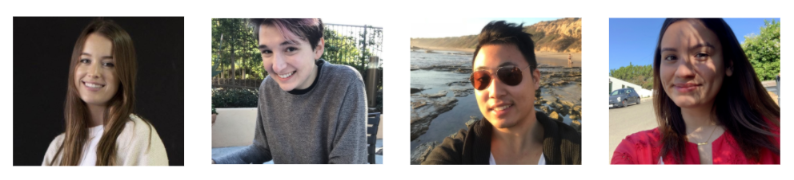Problem
Project linus lacks proper messaging and transparency on their site. The lack of branding and communication detracts from user perception of the website and gives them a sense of unprofessionalism.
Solution
We redesigned the website to have a more cohesive theme through blanket themed micro-interactions and an easier to parse website structure.
Introduction
Blankets are needed for children to feel comfort and warmth. The organization, Project Linus, provides homemade blankets to children in need across the united states.
I am a UX/UI design students who worked in a group to redesign this non-profit’s website for a UX/UI bootcamp. We were unable to obtain a stakeholder interview due to the current Covid-19 outbreak. Due to this, during our heuristics analysis, we probed their website for key performance indicators and for additional insight into the needs of the organization.
Research
In total, we conducted 20 convenience based user interviews and usability tests remotely. Additionally, we did a user survey with 19 participants from a different pool. A large majority of our users in both studies were between the ages 18 and 30. A majority of people in this age range prefered to volunteer their time to organizations, and thus we will focus on how to increase volunteer rates.
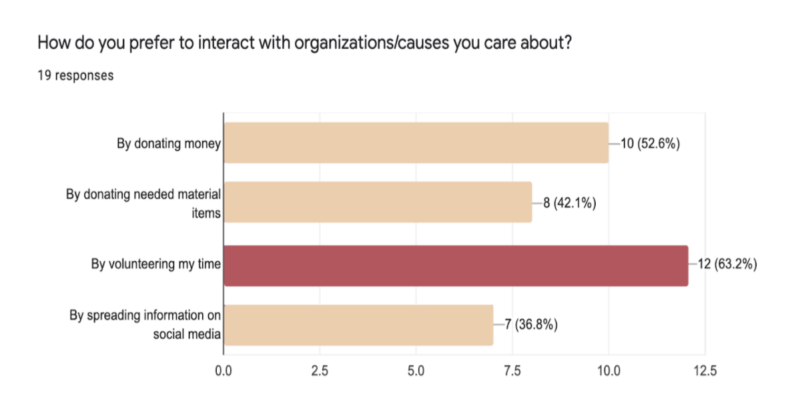Current usability issues
Doing a heuristics analysis, we noticed several issues.
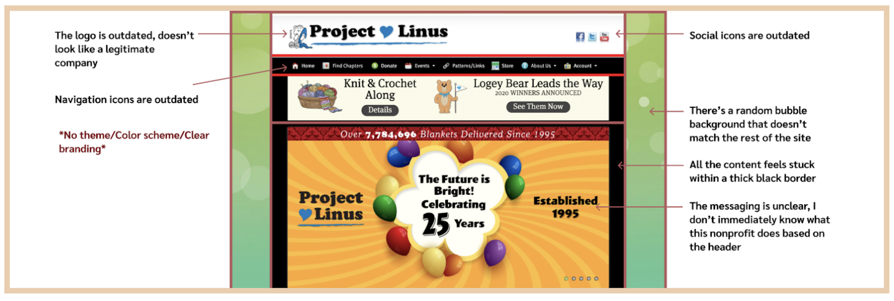Affinity diagram
After pooling together some user insight from the user interviews, we did an affinity diagram and continued to flush out our ideation.
We identified two main insights:
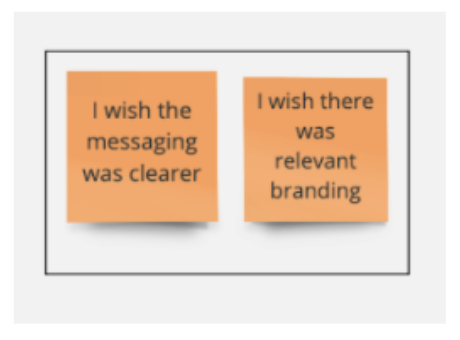Problem statement
Project linus lacks proper messaging and transparency on their site. The lack of branding and communication detracts from user perception of the website and gives them a sense of unprofessionalism.
User persona
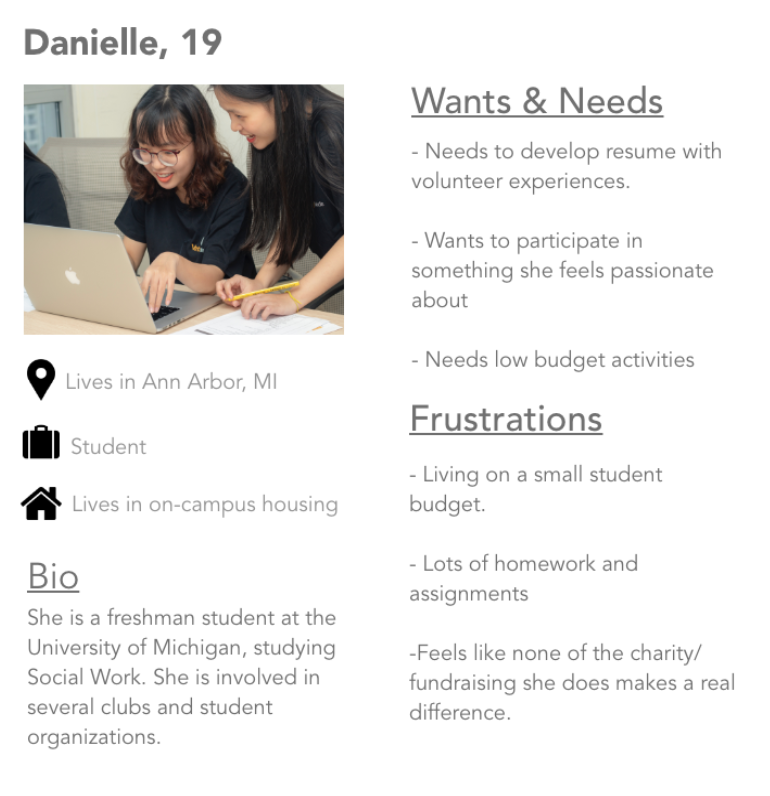User journey map
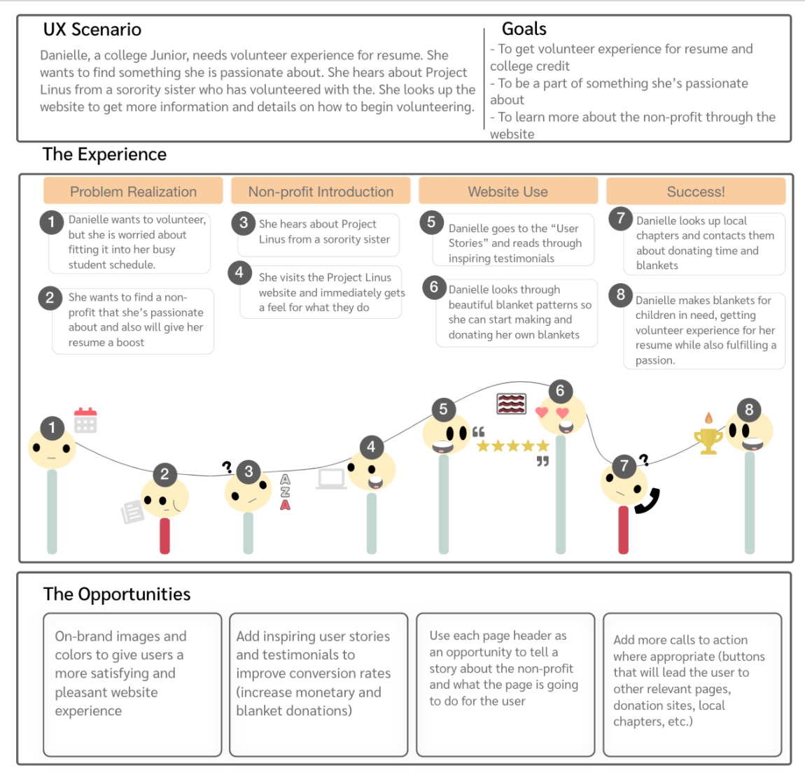Information card sort
After I did a card sorting exercise with several users, we came up with the following information architecture:
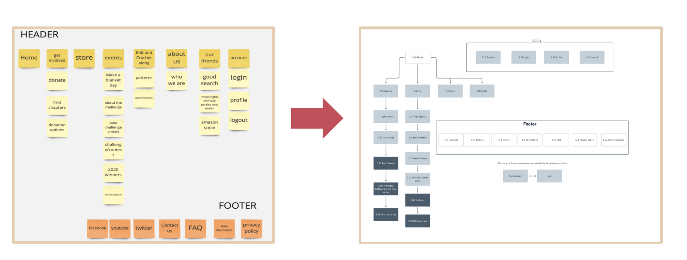During this step, we decided to change the “get involved” nomenclature to “join” in order to decrease the amount of space in the navigation bar.
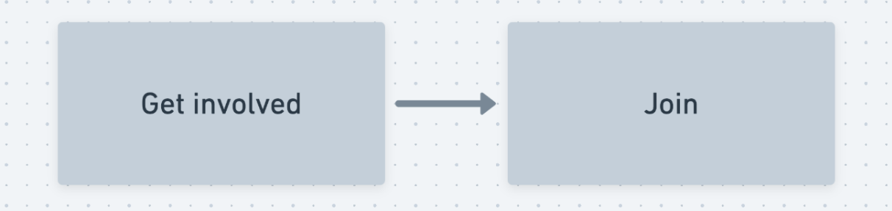Low-fidelity wireframes
We decided to create a seperate volunteers page to cater to our user data. We found that our users were frustrated that it was difficult to find information on volunteering. The original website’s architecture lacked a volunteers page, as the original website clustered volunteer information in with the find chapters page. We separated these pages to make it is easier for users to parse through the content.
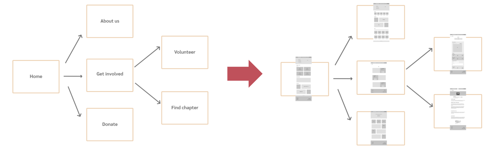Logo redesign
My team redesigned the logo in order to create more brand consistency:
- The colors were changed to reflect warmer colors.
- The heart in the middle was changed to evoke quilting imagery by utilizing a stitching pattern.
- The linus character was removed to simplify the logo and the look of the website as a whole.
- The font was changed from a serif to a sans-serif to make the logo more simplistic as well as increase web readability.
User prototype testing
During user testing of our prototype, we identified two crucial issues:
1.
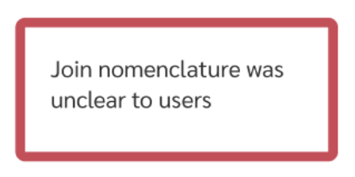2.
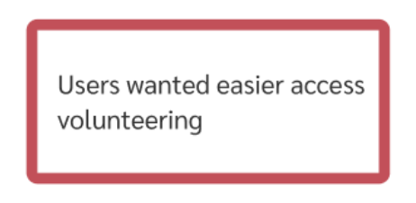Iterations
Because the “join” nomenclature was unclear, we changed it back into “get involved” for the high fidelity mockup. Further testing revealed that users were more familiar with this labeling.
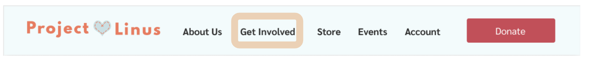During our testing, some users were continuing to have trouble finding the volunteers page, and noted that they expected it in the footer. This insight prompted us to place a link to the volunteers page within the footer navigation.
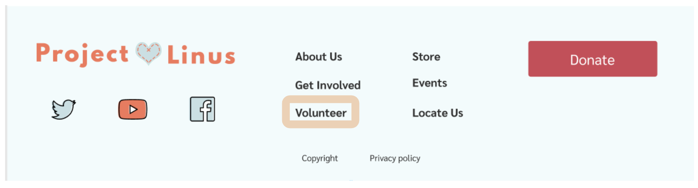Mood board
The mood board was created to push the direction of the interface. Based on user input, it was important for the website to have a coherent theme to seem legitamite. Inviting soft colors are used to push the soft blanket metaphor and create an inviting narrative. These decisions are reflected in the styleguide.
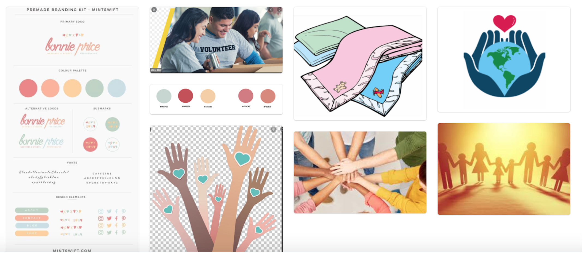Style guide

Microinteractions
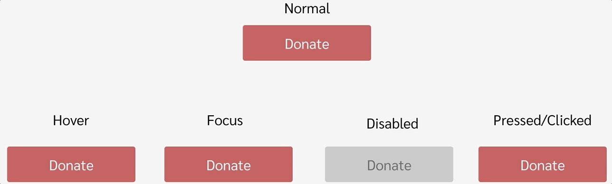The hover state emulates the halfback stitch pattern being sewn into the button. The animation ends at the final keyframe to prevent misunderstanding it as a loading animation.
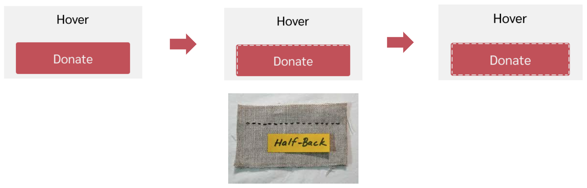When pressed, the button will subtly emulate the quilting pattern.
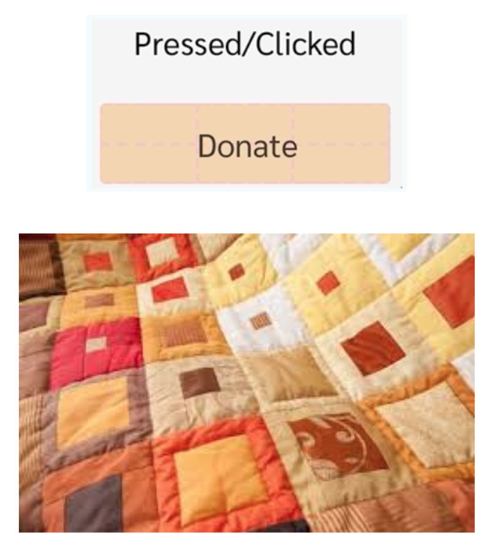During early testing of the high-fidelity version, some users stated they were intimidated when they looked through the first page due to the amount of color. In response, we designed the home page images to increase opacity to 100% from 20% as one scrolled down. This decreases visual noise until the visual is relevant, as well as give the benefit of increasing color warmth as more information is learned.

High-fidelity prototype
 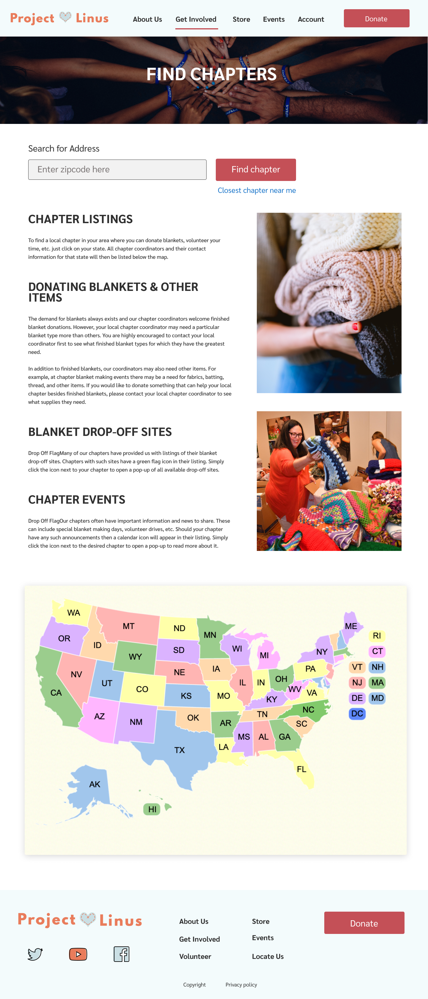
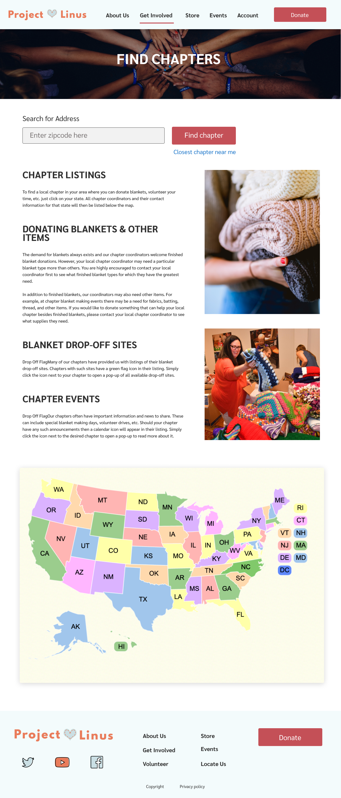

Key learnings and takeaways
It is important to test often: Testing, iterating, testing and iterating again is an ongoing cycle.
Constant communication in a design team is key: Although we broke of into separate tasks, we were able to keep things consistent through the process by doing stand ups, and using Slack.
Going forward, we would want to continue testing and iterating: There are still many issues that need to be addressed, with further A/B testing. One such issue is further testing of how users interact with the local chapter location applications and searches on the website. During the current iteration, it is unclear whether users can easily find where to volunteer even after finding the volunteers page itself.
Additionally, we need to test our version of the log with the old logo. Brand identity is important. As we did not have impute from the non-profit themselves, we need would need to utilize future user interviews to determine whether the logo change is effective toward a brand change.